Why Use Preferences? Preference Profiles are used to override default information for specific sales order detail lines based on specific customer/customer group and item/item group combinations. They override information defaulted from the F4101, F4102, F03012, and/or Data Dictionary. Preferences are best used when there are consistent business requirements that differ from the default values for the Sales Order Management system.
Advanced Preferences were developed to provide the capability of preference functionality to work with complex Item Groups and complex Customer Groups. Many find the setup for Advanced Preferences to be more intuitive and familiar since it is the same interface the one used in Advanced Pricing.
Basic and Advanced Preferences can be used together. When preferences are resolved the Advanced Preferences will be resolved first then the Basic Preferences will be resolved.
At the same time, the system will not let Basic Preference override the already resolved Advanced Preference values by not executing the related/corresponding basic preferences.
Only one field/value is defaulted either from Advanced Preference or Basic Preference, but not by both.
Select on Preference Master (P40070) from menu G4231.
Take the Master Revisions row exit where the constants are defined for each preference type to be used. These are used to build a preference profile list.
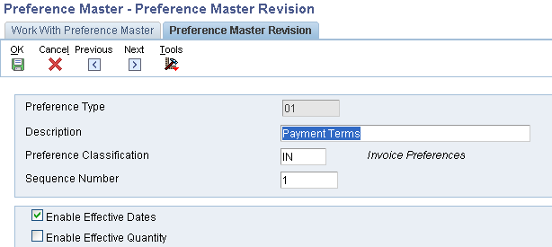
Preference Type: UDC 40/PR. This is the same UDC table that is used for base and advanced pricing hierarchies. Each preference is represented by its own value in this UDC table. Note: This table is used to turn on/off additive functionality in Commissions Preferences.
Description: This displays on the preference profiles main listing.
Preference Classification: UDC 40/CL. Header title used to group preferences on the preference profile main listing, P40070.
Sequence Number: The order preferences will appear (if more than one) under the header.
Enable Effective Dates and Quantity: These flags control the display and use of the date and quantity fields on the preference inquiry and maintenance screens, P40300. Note: If using the Effective Quantity flag, the Effective Date flag must be used as well. This is necessary due to the file key structure.
If Effective Quantities are activated, no UOM conversion will take place. The preference becomes UOM specific. This means that a preference must be created for each UOM to be used. Furthermore, if the flag is ever changed to not use Effective Quantities, delete all of the preferences that use Effective Quantity and re-enter the new preference with the Effective Quantity flag disabled.
Preference Hierarchy: P40073-F40073. An existing hierarchy can be modified for the selected preference by taking the Hierarchy row exit from the Work With Preference Master form. A hierarchy can also be added for custom preferences by selecting on P40073 from menu G4222. The hierarchy allows a preference to be setup for a specific item, item group, customer, customer group, or a combination of these. A hierarchy must be set up for any preference to find a match. Each preference has its own preference type.
The hierarchy tells the system in which order to search through the preference file for a match. Start with the most specific and list to the most general. The hierarchy must start with a '1' and numbers can't be skipped. Use as few levels as possible, the more levels, the more processing time is required. Customer can be Sold To, Ship To, or Parent. Some preferences, like Print Messages, will disallow the use of certain combinations (see Individual Preference Setup).
Preferences will search the Preference Hierarchy and when they find a match, it will resolve the preference and will not continue searching to find a match at lower levels.
For example assume the hierarchy is setup with sold to customer number & item number as level 1 and sold to customer group & item number as level 2.
If an exact match exists for level 1 (customer number & item number), the preference selects that record, resolves the preference and stops searching. Once a match occurs, the system will not keep searching for matches at lower levels. For example if the customer address is also included in the customer group and item causing a match at level 2, that match will not be found and the preference will not get resolved for the level 2 search. If you want multiple searches Advanced Preferences can be used, see Advanced Preferences (P4070/P4071/P4072/P4210/P42101) for details.
Note: The one exception to this is Commissions. Commissions have the option to apply multiple levels of a preference by turning on additive functionality.
Customer Preference Groups: P40071-F40071. From the Work With Preference Master take the Customer Groups form exit. Simply select the record after finding the address book value to be used, and populate the necessary fields for each preference. This is used to create customer groups for preferences. Each preference type has a separate UDC table for customer groups.
There is NO setup in the Customer Billing Instructions for Customer Preference Group. However, Customer Billing Instructions must exist to be able to find the customer from the Customer Groups (P40071) window.

Item Preference Groups: P40072-F40072. From Work With Preference Master take the Item Groups form exit, which is used to create item groups for preferences. Each preference type has a separate UDC table for item groups. Simply find the item number and select it. Then select the appropriate field for the preference(s) being used.
There is no setup in the Item Master or Item Branch/Plant for Item Preference Groups.

Adding Individual Preferences: From the Work With Preference Master form select a specific preference and then add the preference details. Each preference has its own unique program and file ID. For example, the payment terms preference has an application ID of P40301 and a file ID of F40301.
Find/Browse/Add business view (payment terms preference): 
Click Add, then select the level of the hierarchy to add, the Detail business view is displayed: 
The Preference Revisions screen will differ for each preference. See the Individual Preference Setup Considerations for more detail.
Preference Selection: R40400-G4231. Create a version of Preference Selection (R40400) UBE. In the processing options, enter a "1" or a "2" next to each of the preferences to be processed in Sales Order Entry (P4210). As described in the next section, this version will need to be attached to the Versions tab within the Sales Order Entry (P4210) processing options, and activate preferences within the Sales Order Entry (P4210) processing options. Note: This UBE is not used for Advanced Preferences.
A value of "2" in the preference processing option allows records to be written to the Preference Resolution Ledger (F40300R) when the preference is applied. This option will allow the user to access information at Sales Order Entry via the row exit to "Preference Resolution" (P40300R). There is a resolution table for each preference type (F403xxR).
The Preference Resolution Ledger is not updated by the following preferences for the reasons specified:
Note: The Print Messages, Invoice Cycle, Inventory Commitment preferences do not require Preference Selection.
Processing Option Settings: Sales Order Entry (P4210). Enter the version of Preference Selections (R40400) UBE that will be used in Processing Option #6 on the Versions tab. Enter a "1" in Processing Option # 1 on the Preference tab to activate preferences. Enter a 1 in processing option #2 of the Preference tab to use the Inventory Commitment preference.
Profiles by Customer/Item: P40300. This program is used to find what preferences may already exist for certain customer/item combinations. Determine the strategy of each preference's use whenever a preference already exists for certain combinations.
Preference Batch Processing: R40840. This UBE is used to populate existing sales order detail lines with preference profile values, used to populate blank fields and/or override non-blank fields.
Please note that Batch Batch Preference Processing (R40840) is only designed to re-process the following basic preferences:
- 01 Payment Terms
- 02 Pricing Unit Of Measure
- 03 Revenue Cost Center
- 04 End Use
- 07 Product Allocation
- 08 Grade and Potency
- 09 Delivery Date
- 10 Line Of Business
- 11,12,13 Price Code 1,2,3
- 16 Order Preparation Days
- 14 Price Adjustment Schedule
- 41 Next Order Status
- 44 Sales Commission
- 45 Customer Currency
- 38 Payment Terms (Branch Specific)
- 47 Pricing Unit Of Measure(Branch Specific)
- 49 Revenue Cost Center(Branch Specific)
- 39 Product Allocation(Branch Specific)
- 21 Receiving Location
- 22 Shipping Location
Advanced Preferences were developed to provide the capability of preference functionality to work with complex Item Groups and complex Customer Groups. Basic preference functionality can still be used in 8.9, but any new preference functionality will most likely be created as an Advanced Preference. Note: Not all basic preferences have been made available in Advanced Preferences.
Advanced Preferences use the same setup applications that are used in Advanced Pricing. New processing options specify whether P4070, P4071 and P4072 are running in Pricing or Preference mode. The Preference Values Definition (F40711) table determines what fields are returned and what additional driver fields are available for each preference. Note: Modification of the values in the Preference Values Definition (F40711) table is not supported and may produce unpredictable results.
If complex groups are used, the customer /item group needs to be specified in the adjustment name. Go to application P4071 - Advance Preference name revisions and select the adjustment and enter item/customer group.
When using Advanced Preferences the system performs the following steps:
Note: Both F4070 and F4071 are cached, and so any changes made to those records will require the cache to be refreshed before they go in effect.
Note: Advanced Preferences are not applied to 'T' Text Line Type records.
Note: Another required step involves the setup of the Preference Values Definition (F40711) table. The data in this table is part of pristine data and should not be altered. However, populating this table with pristine data is a pre-requisite for Advanced Preferences to work.
Document Types
In order for Advanced Preferences to resolve, UDC 00/DT must have the Document Type specified in the Special Handling Code.
From menu G40311 select Advanced Preferences Name Revisions (P4071). 
Creating a new Preference Name will generate an entry in the 40/TY UDC table. A '2' will be placed in the Special Handling Code to indicate that this is a Preference Name rather than a Price Adjustment.
Note: If the top field on the form is titled "Adjustment Name" instead of "Preference Name", then the wrong version of P4071 is being executed or the processing mode in the processing options is not set to '1'.
Processing Options for Advanced Preferences
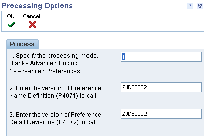
The first processing option determines whether the application is running in Pricing or Preference mode. The other processing options control what versions of the other applications are called when taking row or form exits. These versions must have the processing mode set to match the mode in the first processing option. These processing options are available for: P4070, P4071 and P4072.
From menu G40311 select Advanced Preference Schedule Revisions (P4070). Note: Both F4070 and F4071 are cached, and so any changes made to those records will require the cache to be refreshed before they go in effect.
Define the Preference Schedule. Select one or more Preference Names to make up the Preference Schedule.
Creating a new Preference Schedule will generate an entry in the 40/AS UDC table. A '1' will be placed in the Special Handling Code to indicate that this is a Preference Schedule rather than a Pricing Schedule.
Note: If the top field on the form is titled "Adjustment Schedule" instead of "Preference Schedule", then the wrong version of P4070 is being executed or the processing mode in the processing options is not set to '1'.
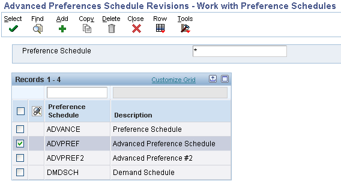
Note: The Present Design of Advanced preference (Releases 8.9 to present release) regarding the sequencing within the Preference Schedule is to follow the order listed below. It is not coded to consider the sequence order specified in Preference Schedule (P4070).
1. Order Prep Days (22)
2. Delivery Date (03)
3. Order Detail Defaults (02)
4. Print Message (04)
5. Commission Code (21)
6. Sales Price Based On Date (18)
7. Advanced Lot (23)
8. Fulfillment Entry (41)
9. Internal Sales Order Tax Date (46)
10. Grade and Potency (25)
11. Inventory Commitment (05) The Inventory Commitment preference will be resolved during the sales order commitment processing.
12. Next Order Status (24)
13. Gross Profit Margin Target (19)
If the Inventory Commitment Processing Option is activated within the Sales Order Entry (P4210) Processing Option Preference tab, then the system will only resolve these two preferences: Order Prep. Days (22) & Delivery Date (03) again after the Inventory Commitment Preference is resolved during the commitment processing time. All the other listed Preferences will be resolved during the sales order detail grid tab down process (i.e., F4211 Edit Line Process). The Inventory Commitment Preference can also be resolved during the Print Pick Slip (R42520) UBE Process.
From menu G40311 select Advanced Preference Detail Revisions (P4072).
Select an existing detail record or press Add to create a new Preference Detail. The preference hierarchy selection form will appear. Which hierarchy options appear is based on the preference hierarchy defined for this preference during Preference Name Definition. Specify the desired Item, Customer, Item Group, Customer Group and Date Range.
Note: in the 8.12 release of EnterpriseOne, after entering information in P4072 and clicking on the OK button, it would remain on the same form (W4072A). From release 9.0 onwards, after the user clicks OK, the system will take you back to the previous screen (Hierarchy Selection form W40073F).
This change was made in 9.0 through BUG 17944013 : P4072 - PRICE DETAIL REVISION GRID DOES NOT CLOSE AFTER SAVE.
In 9.1 it was changed by BUG 16187401 : P4072 - PRICE ADJUSTMENT DETAIL REVISION GRID DOES NOT CLOSE AFTER SAVE.
A row exit must be selected to access the Preference Detail values. The additional Driver fields (if any) and Return fields that appear on this form are dependent upon the Advanced Preference Type.
Note: If no fields appear in the grid other than Sequence, the Preference Values Definition (F40711) table has not been setup correctly for this preference type. To populate the Preference Values Definition (F40711) correctly run the Preference Values Definition (F40711) Update (R40711S). Clients upgrading from 8.9 to 8.10 will need to run this UBE.
The fields in the grid that are in BLACK font are part of the Preference Key, and the fields in BLUE font are the Preference Values.
All preferences are designed to search the Preference Hierarchy and when they find a match, the program will resolve the preference and will not continue searching to find a match at lower levels.
For example assume the hierarchy is setup with sold to customer number & item number as level 1 and sold to customer group & item number as level 2.
If an exact match exists for level 1 (customer number & item number), the preference selects that record, resolves the preference and stops searching. Once a match occurs, the system will not keep searching for matches at lower levels. For example if the customer address is also included in the customer group and item causing a match at level 2, that match will not be found and the preference will not get resolved for the level 2 search.
If you want multiple searches you would have to use Advanced Preferences and setup two or more Preference Names for Preference Type using different Preference Hierarchies for each Preference Name and then include all the Preference Names in the Advanced Preference Schedule.
For Example you could setup two Type 06 Product Allocation Advanced Preferences as follows:
Put both PRODALL1 and PRODALL2 in the Advanced Preference Schedule (ADVPREF).
Populate ADVPREF in the Preferences Tab Option of Sales Order Entry for Override Advanced Preference Schedule.
When the sales order is entered, the PRODALL1 preference will be processed and the preference will be resolved if the search hierarchy returns a match on customer number and item number. Next the PRODALL2 preference will be processed and the preference will be resolved if the search hierarchy returns a match on customer group and item number.
Select the System Constants form exit from Branch/Plant Constants (P41001). Designate the Preference Schedule to be used system wide. Designate the Preference UOM selection (only used for Order Detail related preferences).
Assign an override Preference Schedule in the Sales Order Entry (P4210) Preference Tab processing option #3 (Optional) if you wish to use a different preference schedule than is specified in the System Constants.

History will only be written for those Advanced Preferences that are designated in Preference Name revisions. The same table that is currently used for Price History (F4074) will also contain entries for Advanced Preference history. A row exit from Customer Service Inquiry (P4210) will display the Advanced Preference history. Selecting a row on this form will display additional preference detail.
Which sales order date (order date, requested date, price effective date, promised delivery date...) is used to determine which preference record to select from the standard or advanced preferences when there are multiple records with different effectivity dates?
In the System Constants (P41001) there is a setting for selecting pricing records, which is the Sales Price Based On Date (CP01). There is no equivalent Sales Preference Based on Date as a universal setting for selecting Preference records. The order date used to select the preference record based on the preference effectivity date is hard-coded depending upon what preference is being used. There is no single document that lists it for each preference. Development has reviewed the code for several preferences below and has provided the following information on these preferences.
| Preference Profile | Order Date Used to Select Preference Record Based on the Preference Effectivity Date |
| 01 Payment Terms Preference | Requested date (if requested date is blank then Transaction date is used) |
| 02 Pricing (UoM) Preference | Requested date (if requested date is blank then Transaction date is used) |
| 03 Revenue Business Unit Preference | Requested date (if requested date is blank then Transaction date is used) |
| 06 Inventory Commitment Preference | Requested Date |
| 41 Next Order Status Preference | Transaction Date |
| 45 Customer Currency Preference | Order Date |
| 11, 12, 13 User Defined Price Code Preferences | Requested date (if requested date is blank then Transaction date is used) |
| 14 Price Adjustment Schedule Preference | Requested date (if requested date is blank then Transaction date is used) |
Payment Terms: P40301-F40301 (Preference Type 01)
The Payment Terms preference is used to default the Payment Terms and/or Payment Instrument into the Sales Order Detail file (F4211).
Payment Terms by Branch/Plant: P40338-F40338 (Preference Type 38)
The Payment Terms by Branch/Plant preference works the same way as the Payment Terms preference type 01, but it adds the flexibility to have the preference apply to only sales order detail records with a specific Branch/Plant defined in the preference..
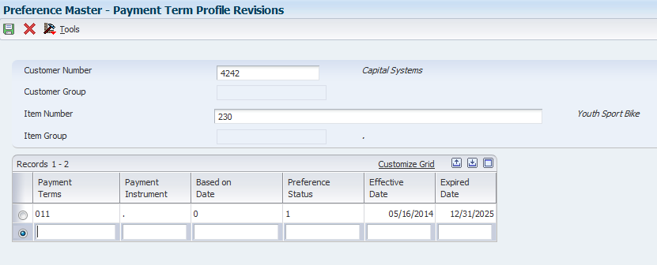
Payment Terms
Payment Instrument
For more details see Payment Terms Basic Preference Profile (P40301/P40338).
The Pricing Unit of Measure basic preference allows a pricing unit of measure that is different from the pricing unit of measure set up for the item to default into the Pricing Unit of Measure field in the sales order detail record.
The system will search through the preference hierarchy until it finds a match. The pricing unit of measure (UOM4) field in the Sales Order Detail file (F4211) is updated.
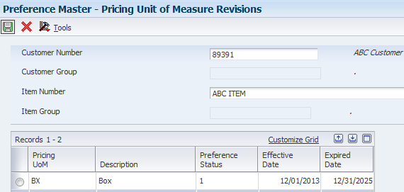
Pricing Unit of Measure (UOM4)
For more details see Pricing Unit of Measure Basic Preference Profile (P40302).
The Revenue Business Unit preference (Preference Type 03) is used when a cost center (business unit) other than the cost center on the Sales Order Header is needed for the revenue journal entries.
The system will search through the preference hierarchy until it finds a match. The Header Cost Center (EMCU) field in the F4211 is loaded with the preference value.
Note: The Revenue Business Unit preference does NOT apply to interbranch or intercompany sales orders.

Revenue Business Unit (EMCU)
For more details see 1607575.1Revenue Business Unit and Revenue Business (Cost Center) (P40303).
The End Use preference is used to input the End Use and/or Duty Status fields into the Sales Order Detail (F4211) file. It can be used as a reporting code or as a parameter for pricing adjustments. The system will search through the preference hierarchy until a match is found. The End Use EUSE) and/or Duty Status (DTYS) fields in the Sales Order Detail file (F4211) are updated by this preference.
To populate the End Use field, a valid value needs to be setup in UDC Table 40/EU.

Populate the Duty Status field with a valid UDC 40/DS value.

Complete the required fields with the Preference Status (this needs to be 1 in order to be considered active) and the Effective and Expired Date.

End Use (EUSE)
Duty Status (DTYS)
For more details see End Use Basic Preference Profile (P40304).
The Print Message preference allows additional Print Messages to be specified based on the Item Number, the Item Group, or a combination of Item Number, Item Group and Customer, Customer Group. A print message can be specified on the order header, the order detail, and/or in the processing options of the individual print program.
Programs Affected: Print Message preferences work with the following distribution UBEs:
| R42520 | Print Pick Slips |
| R42565 | Invoice Print |
The system will search for ALL eligible Print Messages that apply for a given order based on the preference hierarchy. It will print the message for every hit in the hierarchy (sometimes causing the same message to print multiple times). Print Messages can be entered by branch/plant for each level of the hierarchy. If the same Print Message applies to all branch/plants for a given hierarchy, leave the branch/plant field blank on the Print Message Revision screen. Print Message setup determines which document types on which the preference Print Messages are to print.
Print Messages must be defined at the detail (item) level rather than the header (customer) level. For example, a user cannot enter a print message for a customer across all items, but it is possible to enter a print message on item across all customers or for a specific Item/Customer combination. The Preference Hierarchy (P40073) screen is input inhibited for invalid combinations, when the correct preference hierarchy is selected. For print messages, Preference Hierarchy Type 05 should be used.
Print Messages Preference is not added to Sales Order Detail (F4211) table, there is no need to set up or attach a version of Preference Selection (R40400) to Sales Order Entry (P4210) program.
Setup UDC 40/PM-Print Messages code.
Go to menu G4241 to Work with Print Message (P40162). Setup the Print Message code with Text Attachment; this is the message to print.
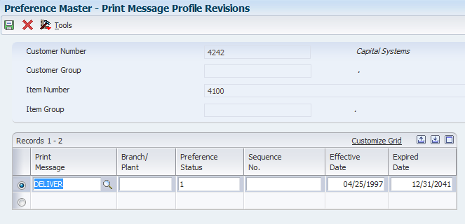
Message ID
For more details see Print Messages Preference (P40305/P40162).
The Inventory Commitment preference enables a single Sales Order line to be automatically committed from a different branch than the header branch, or be committed across several branches. This will increase the chances that an order will be completely filled, and gives users greater flexibility to commit from locations that make sense in their business.
Businesses using the Inter-branch process usually enter Sales Orders in a Branch/Plant that is a sales office and may not carry any inventory. They use Inventory Commitment Preferences during the Sales Order Entry process to resolve the sourcing Branch/Plant. The intention is to ship the order from the sourced Branch/Plant. This is a common business model where many sales Branch/Plants source their orders from one or more distribution centers. The sourcing may take place from multiple Branch/Plants, based on the preference setup and availability at the sourced Branch/Plants.
Use the Sequence Number field to tell the system which Branch/Plant you want to try to pull inventory from first, second, and so on. When the Route Code, Mode of Transportation, and Carrier Number fields are populated, these values will be used to populate the Sales Order Detail (F4211) records. If using a Carrier (33) or Mode of Transport (34) Transportation preference for these values, the information populated in the Inventory Commitment preference will be ignored.
The Branch Plant, Percent To Fill and Preference Status options are required, along with the Sequence Number if multiple branches are set up. Optional fields are Mode of Transport, Route Code and Carrier. If these are set up, they will populate the Sales Order Detail File (F4211) for an order created with this preference applied.

Carrier
Detail Business Unit (MCU)
Mode of Transport
Percent to Fill
Route
For more details see Inventory Commitment Preference Basic Profiles (P40306).
The Product Allocation preference is used to control the sales of products by restricting the quantities that can be sold. Quantity limits can be set which specify the quantity each customer is allowed to purchase, or the quantity allowed to be sold of each item. Complex Customer Groups will not work with this preference, but the functionality has been requested, see Product Allocation Preference Type 07 and Complex Customer Groups for details.
Additional Information: Allocations can be set up as either units or a percentage of the total quantity that is available:
When an order is placed for an allocated product, the quantity ordered accumulates toward the allocation limit. The Quantity Sold field is updated each time sales orders are entered for the allocated product and displays the quantity ordered since the allocation went into effect. When an order is changed or canceled, the quantity is subtracted from the running total. When the Quantity Limit is exceeded, the quantity will highlight and a warning is issued in Sales Order Entry.
Quantities should not be enabled in the Preference Master for this preference. Kits and configured items are not functional with the Product Allocation preference.

Quantity Ordered (UORG)
For more details see Product Allocation Preference Profiles (P40070, P40073, P40307, P40339, P42090).
Grades enables items to be classified (for example, grade A eggs and grade AA eggs). Potency allows a percentage of an active ingredient in a product to be specified (for example, the percentage of alcohol in cough syrup).
When grade or potency control is activated for an item, a standard grade or potency can be entered for the item along with a range of acceptable values. If items are received that are not within the acceptable range, the system displays a warning message. A sales order can not be created for items that are not within the acceptable range.
Acceptable grade or potency ranges for each of customer can be specified using preference profiles. Item grade and potency values are applicable only to items that are produced in lots. Both grade control and potency control cannot be used for the same item. The grade or potency of all items in a lot can be specified on Work With Lot Master (P4108). If a grade or potency is not specified, the system uses the standard grade or potency entered on the Additional System Information form of the Item Master (P4101) or Item Branch (P4102) applications.
Bulk products cannot be selected by grade or potency or load confirmed by lot, hence Grade and Potency should only be setup and used for packaged items.

Grade
Potency
For more details see Grade and Potency.
The Delivery Date, or Lead Time Transit Days, preference enables the automatic calculation of the Promised Delivery Date (RSDJ), Promised Ship Date (PPDJ), and/or Pick Date (PDDJ) on the sales order detail line. Note: These dates are not calendar days, they may fall on the weekend.
This preference is also applied at time of Inventory Commitments (R42997), if used in conjunction with Inventory Commitments Preference.

Delivery Date (RSDJ)
Ship Date (PPDJ)
Pick Date (PDDJ)
For more details see Delivery Date Basic Preference Profiles (P40309).
The Line of Business basic preference is used to default the Line of Business field into the Sales Order Detail (F4211) file, based on the preference hierarchy.
The system searches the preference hierarchy until it finds a match. The LOB field is generally used for reporting purposes; price adjustments can also be based on this field.
Line of Business
For more details see Line of Business Basic Preference Profile (P40310).
The User Defined Price Codes basic preferences are used to default the Price Code fields into the Sales Order Detail (F4211) file, based on the preference hierarchy.
The system will search through the preference hierarchy until it finds a match. The Price Code 1 (UPC1), Price Code 2 (UPC2) and Price Code 3 (UPC3) fields in the Sales Order Detail file (F4211) are updated. PC1 belongs to preference type 11, PC2 belongs to preference type 12 and PC3 belongs to preference type 13.

Price Code 1
Price Code 2
Price Code 3
For more details see User Defined Price Codes (P40311, P40312, P40313).
Basic Preference 14 allows the user to assign a specific adjustment schedule to an order, replacing the default schedule from the Customer Billing Instructions. The preference also works when there is no existing schedule in the Customer Billing Instructions. This paper shows the setup and processes required to implement this preference. The preference is available in releases XE and above.
This preference will populate the Adjustment Schedule field (SDASN) in the Sales Order Detail file (F4211), update the Price History File (F4074), and is applied at Sales Order Entry.

Adjustment Schedule (SDASN)
For more details see Price Adjustment Schedule (P40314).
The primary purpose of this batch program is to calculate a scheduled invoice date for sales orders. The scheduled invoice date will determine on which date the Print Invoices (R42565) program will print the invoice. If the scheduled invoice date is greater than today's date, the Cycle Billing (R49700) program will write deferred journal entries. A cycle billing version of the Print Invoices (R42565) program will be created, so that invoices will be printed only when the scheduled invoice data is less than or equal to the date specified in the processing options. The scheduled invoice date field (SIDT) is stored in the Sales Order Detail Tag (F49211) file and is written at the time the Cycle Billing (R49700) program is run.
There are four fundamental types of cycles available in EnterpriseOne.

Invoice Cycle (INCY) for Cycle Billing
For more details see Cycle Billing (R49700/R42565/R42800).
The Order Preparation Days preference enables the automatic calculation of the days between the Scheduled Pick Date and Promised Ship Date (PPDJ), on the sales order detail line.
This preference is also applied at time of Inventory Commitments (R42997).
The system uses the number of days specified in preference information to determine the time it will take to pick the order line, then get it ready to be shipped. Often times, the Delivery Date Preference (09) is used in conjunction with the Order Preparation Days preference (16) to determine the Promised Ship Date (PPDJ) in order to meet the Promised Delivery Date (RSDT).

Order Preparation Days
For more details see Order Preparation Days Basic Profiles (P40316).
The Pricing or Container Management preference is only used with Container Management. It is used to dictate if a customer is to be charged for rental or a deposit, and if the customer is to be billed by transaction or in summary.
This preference is only applied at time of Container Extraction (R41189).
Additional Information: The Pricing/Container preference is applied to the sales order by the Container Extraction program, R41189, not at Sales Order Entry.
Do not use Effective Quantities for this preference. If Effective Quantities are used, the system will not process credit orders.
There are three other preferences that can work in conjunction with this preference: The Cycle Billing preference (if billing in summary), the Pricing Unit of Measure preference (if applicable), and the Print Message preference (if applicable).
Summary - With the summary method, Container Management calculates the net quantity and amount for the transaction that occurs in a period and issues an invoice or refund on a net basis. The Container Management programs summarize all transactions for a single combination of branch/plant, customer and item that occurred in a specific period.
Transaction - With the transaction method, Container Management processes each transaction recorded for the customer. Each return is refunded and each delivery is charged.
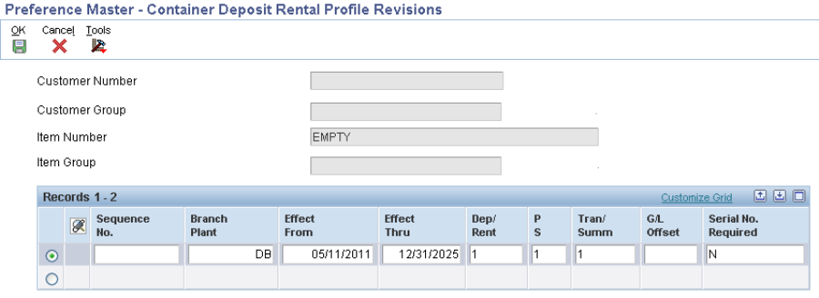
Deposit/Rental
Summary/Transaction
For more details see Container Management Overview (P4118/P41181/P41184/P40317).
The Quality Management preference is used to Specify quality tests and specifications, tolerance values, preferred values, sample requirements, and results for a specific customer or a group of customers. This preference is branch specific.
Additional Information: Applied during shipment confirmation to the Test Results (F3711) file.

Test Results
For more details see Preference Profiles For Quality Management.
Shipping and receiving docks (Loading docks) are the arrival and departure point for shipments brought to or taken from the warehouse by the transportation companies (Trucks). From the Warehouse point of view these locations are material handling areas where goods are stored for receiving and shipping.
Most warehouses have multiple shipping or receiving docks, some distribution centers could have as many as 100 or more different docks for receiving or shipping goods. Shipping and receiving docks (Loading docks) are the arrival and departure point for shipments brought to or taken from the warehouse by the transportation companies (Trucks). From the Warehouse point of view these locations are material handling areas where goods are stored for receiving and shipping.
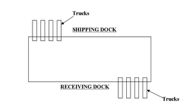
EnterpriseOne has provided Shipping/Receiving Locations Preferences in Advanced Warehousing to accommodate the need of users to specify dock numbers for shipping and receiving goods. The Shipping/Receiving Locations Preferences are based on criteria entered by the user during the sales order or purchase order entry. The preference could be set up for the carrier, mode of transportation, shipment weight, and/or supplier.
Receiving Location (21)
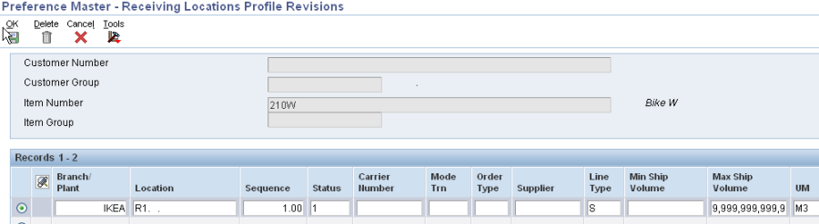

Shipping Location (22)
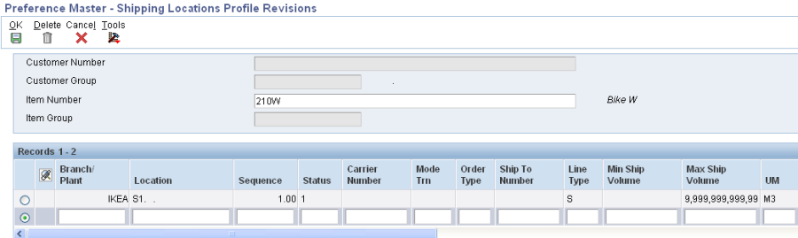
Receiving Location
Shipping Location
For more details see Warehouse Preferences - Multiple Shipping and Receiving Locations.
Delivery documents are specific documents or sets of documents associated with an EnterpriseOne shipment or load created through the Transportation Management system. These documents can be printed interactively by taking a row exit from within Work With Shipments (P4915) or Work With Loads (P4960), or these documents can be printed in batch mode using either Batch Delivery Documents for Loads (R49548) or Batch Delivery Documents for Shipments (R49549). All delivery documents consist of a Build UBE and a Print UBE, with the exception of Invoice Print (R42565).

Document Set
For more details see Transportation Delivery Documents.
Accessorial rates are special charges in addition to regular line haul rates. They are often assessed whenever additional equipment is needed, or an item requires special handling, or a fee is levied. Examples of these accessorial charges would be lift gate service, a hose adapter for delivery of bulk liquids, or fees for detention or weekend delivery. In EnterpriseOne, these accessorial rates are referred to as Options and Equipment. Option/equipment rates are set up similar to other types of rates in that they can be flat rates or per unit rates. When the system evaluates an option/equipment rate, it calculates a charge only if the corresponding option/equipment applies to the shipment or load. Option/equipment rates are identified by specifying the option/equipment code in the rate definition.
Option/equipment codes can also be used to control route selection, and do not have to have charges associated with them. Option/equipment rules can be used to automatically include or exclude certain routes from being eligible for a particular origin or destination. For example, if a shipment’s destination requires a vehicle to cross a bridge with a 15,000 pound weight limit, an option/equipment rule can be set up to exclude all truckload carriers from routing options.

Delivery Line Level
Options/Equipment
For more details see How To Set up Options and Equipment in Transportation Management.
The Customer Freight preference is used to add billable charges to an order, select a routing entry and specify the freight terms for a shipment.
For example, if multiple freight charges exist on an order, this preference can be used to determine if all freight charges should be added together on one summarized line or if the individual charges should be appear on separate lines.
The Customer Freight preference also determines the factors that influence automatic route selection. The system evaluates cost, performance, and delivery time, based on the customer freight preference.
In the form Customer Freight Revisions P40332 enter the Customer Number (required due to the hierarchy selection from the previous step), the additional driver fields (if any) and the return fields such as Freight Handling code, Route Selection type, Billable Freight, Distance, Distance UOM.
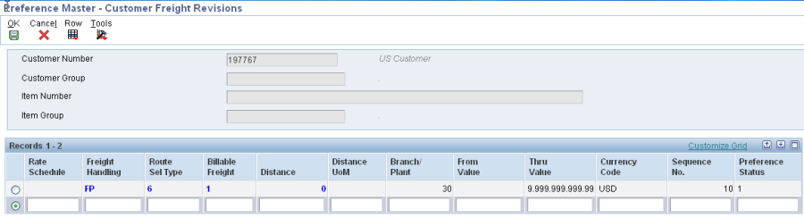
Freight Rate Schedule
Freight Handling Code
Route Selection Type
Billable Freight Summary/Detail flag
Include/Exclude flag
Distance
Distance UOM
For more details see Transportation Preferences (P40330/P40331/P40332/P40333/P40334).
The Carrier preference is used to select or exclude a specific carrier.
It can also be used to select a carrier from a list of preferred carriers. The system uses the Carrier preference to evaluate routes. A route with an excluded carrier is not selected during automatic route selection. The system displays a warning message in routing options if an excluded route is selected for a shipment.
In the form Carrier Revisions P40333 enter the Customer Number (required due to the hierarchy setup), the additional driver fields (such as mode of transport, origin, FH) and the return fields. For Carrier preference, the return fields are: Include/Exclude flag and Preferred Carrier 1, 2 and 3.
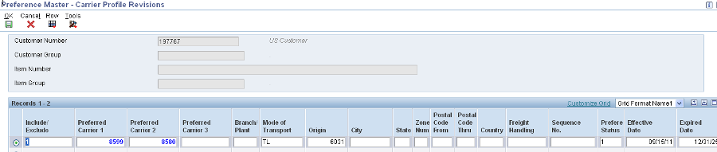
Include/Exclude flag
Preferred Carrier 1
Preferred Carrier 2
Preferred Carrier 3
For more details see Transportation Preferences (P40330/P40331/P40332/P40333/P40334).
The Mode of Transport preference is used to select a specific transportation method based on destination, in addition to preferences at the customer or item level. For example, if a customer prefers that a parcel carrier using second day air always ship all shipments to a specific destination, that would be set up as a Mode of Transport preference.
In the form Mode of Transport Revisions P40334 enter the Customer Number (required due to the hierarchy selection), the additional driver fields (such as Branch Plant, Origin, destination) and the return field which is the Mode of Transport.
Mode of Transport
For more details see Transportation Preferences (P40330/P40331/P40332/P40333/P40334).
The Next Order Status preference is used to skip or insert processing steps after Sales, by overriding the next step in the Order Activity Rules. Certain customer/item combinations may require that steps in the sales order process be skipped.
Programs Affected:
This preference, whether basic or advanced, is applied at Sales Order Entry (P4210/P42101), Batch Order Edit/Create (R40211Z) and Batch Preference Update (R40840).
The preference can be activated at Sales Order Entry, Ship Confirmation (P4205), or Invoice Print (R42565).
Additional Information: The system will search through the preference hierarchy until it finds a match. The Next Order Status is applied at Sales Order Entry. The Order Activity Rules must be set up to accommodate the next status value that is brought in via the preference, and the system will not check for or prohibit invalid next status values when creating the preference. Hence it is possible to receive an error in Sales Order Entry that the status is invalid.

Next Status
For more details see Next Order Status Basic Profiles (P40341).
The Sales Commission preference is used to bring in sales personnel and commission rate information to a sales order detail line. Commissions can be setup for the Ship-To or Sold-To, and based on individual customers, customer groups, and items or item groups. The preference overrides the header information at the line level. The system will search through the preference hierarchy until it finds a match. The Line of Business and Branch/Plant fields are additional search fields that can be used by the preference. Normally, commission information is defaulted in from the Customer Billing Instructions, but the Sales Commission preference overrides the header information at the line level.
Commissions will only be applied at the header or detail. If header commissions are added or changed after accepting the order and commissions are set to default to the detail, the header commission information will override any detail commission information that was previously applied. Different commission preferences can be set up for various customer and item combinations based on the line of business and branch/plant values.
As of 8.9, when using the standard Commission Preferences, this preference allows any number of commissions to be added to an order. In that sense it is an 'Additive' preference. In order to activate the additive functionality, the UDC 40/PR (for Sales Commissions, value 44), is used. If the special handling code value for 40/PR is blank, only the first commission is resolved. If it is a non-blank value, all commissions under the first preference will be resolved.

Salesperson Code
Sales Commission
Flat Commission Amount
Amount Per Unit
Commission Code Type
For more details see Commissions in Sales (P42460).
The Customer Currency preference (Preference Type 45) is used when a specific Currency Code needs to be defaulted at Sales order Entry for a specific Customer or Customer Group.
The system will search through the preference hierarchy until it finds a match. CRCD field in the F4201/F4211 is loaded with the preference value.
The Customer Currency preference is used to assign a specific currency code to a customer number or group. This preference can be defined for specific Branch/Plants or for all Branch/Plants.
Additional Information: Unlike other preferences, the Customer Currency preference does not include items or item groups since the currency code must be the same for all items on an order. The preference is also different in the respect that it overrides the default currency code from the Customer Master for the whole order and not just specific detail lines.
You must be in a multi-currency environment, have an exchange rate defined for each currency, and the Customer Master will still need to have currency codes set up.
Note: The Customer Currency preference is not supported for Transfer Orders (ST/OT.)

Currency Code
For more details see Customer Currency Basic Preference (P40345).
The Pricing Unit of Measure by Branch preference is for use with Bulk Stock Items functionality only. The two new fields in this preference are Price At and Based on Date.
Additional Information: The Price At field identifies the price extension calculation method. Valid Values are:
A Unit Price x Delivered Volume at Ambient Temperature
S Unit Price x Delivered Volume at Standard Temperature
W Unit Price x Delivered Weight
The system is hard-coded to price at ambient UOM unless the preference profiles are setup otherwise. If set to price at standard UOM, the extended price in the sales order will change if the standard UOM is different from the ambient volume.
If the invoice is printed prior to delivery, the price extension calculation uses the order quantity in the pricing unit of measure. This means that the ambient and standard quantity will be the same.
The Based on Date field is a value that determines how the system updates the Price Effective Date in the Sales Order Header (F4201) and Detail (F4211) files. In Sales Order Management, the system uses the Price Effective Date (PEFJ) to retrieve the base price from F4106 and price adjustments from F4072.
Note: If both Advanced Preference and Basic preference has been set up within the system, Advanced Preference will take precedence over Basic Preference. If a customer sets up an Advanced Preference and a Basic Preference that have the same available fields, the system will only apply the Advanced Preference and ignore the Basic Preference.
For example: Advanced Preference Type 02 (Order Detail Defaults) and Basic Preference Type 47 (Pricing Unit of Measure by Branch) has been activated for a specific customer. The Advanced Preference 02 (Order Detail Defaults) has been set up to use the Pricing Unit of Measure (UOM) for EA (Each) and the Basic Preference type 47 (Pricing Unit of Measure) has been set up to bring in CA (Cases) by a specific branch plant for the same customer. The system will only apply the Advanced Preference, it will not apply the Basic preference this is per the design of the software.
The two fields which are unique to this preference are Price At and Based on Date.

Price At
Based On Date
For more details see Pricing Unit of Measure (Branch or ECS) Basic Preference Profiles (P40347).
Base Pricing defines a pricing basis for items. Base Pricing allows users to create specific prices for designated item and customer relationships. Once the basis is set up, pricing can be supplemented with Standard Pricing or Advanced Pricing to provide additional functionality for discounts, rebates, free goods, repricing, etc.
Prices can be retained at one of three levels: the Item level, Item/Branch level or Item/Branch/Location level. The Sales Price Level (PLEV) field in the Item Master (P4101) determines this.

Unit Price (UPRC)
For more details see Base Pricing Overview.
The Order Header Defaults Advanced Preference is used to populate the Currency Code in the Sale Order Header (F4201) during Sales Order Entry based on Item/Customer and Branch Plant. Advanced Preference is available for EnterpriseOne releases 8.9 and above

Currency Code
The Order Detail Defaults Advanced Preference is used to populate default values into fields in the Sale Order Detail (F4211) during Sales Order Entry. This Advanced Preference is often used in conjunction with line level Advanced Price Adjustments. The preference is used to trigger the adjustment to be applied to the detail line based on value defaulted. The preference can also be used as a standalone solution to default in field values into the Sales Order Detail (F4211). Advanced Preference is available for EnterpriseOne releases 8.9 and above.
The Order Detail Defaults Advanced Preference allows users to define default values for the Sales Order Detail File (F4211) fields based on Advanced Preference set up during Sales Order Entry:
One common use of the preference is to provide the field driver for invoking line level Advanced Price Adjustments. Although any of the above fields can be used as the price adjustment driver, the most common fields used in this application of the preference are the Price Code 1, Price Code 2, and Price Code 3 fields (UPC1, UPC2, and UPC3). The preference is used to populate a field value into one or all of these fields. If this value matches the value from the adjustment detail then the Advanced Price Adjustment will be applied also.
Currently driver fields are hard coded and listed below:
Note: EMCU, EUSE, UPC1, UPC2 and UPC3 are defined in both driver fields and default fields.
Price Schedule
Pricing Based on Date flag
Duty Status
Header Business Unit
End Use
Line of Business
Price as Ambient/Standard
Payment Terms Code
Payment Instrument
Price Code 1, 2, 3
Pricing Unit of Measure
For more details see Order Detail Defaults Advanced Preference with Advanced Pricing.
The Delivery Date, or Lead Time Transit Days, preference enables the automatic calculation of the Promised Delivery Date (RSDJ), Promised Ship Date (PPDJ), and/or Pick Date (PDDJ) on the sales order detail line. Note: These dates are not calendar days, they may fall on the weekend.
This preference is also applied at time of Inventory Commitments (R42997), if used in conjunction with Inventory Commitments Preference.

Delivery Date (RSDJ)
Ship Date (PPDJ)
Pick Date (PDDJ)
For more details see Delivery Date Basic Preference Profiles (P40309).
The Print Message preference allows additional Print Messages to be specified based on the Item Number, the Item Group, or a combination of Item Number, Item Group and Customer, Customer Group. A print message can be specified on the order header, the order detail, and/or in the processing options of the individual print program.
Programs Affected: Print Message preferences work with the following distribution UBEs:
| R42520 | Print Pick Slips |
| R42565 | Invoice Print |
The system will search for ALL eligible Print Messages that apply for a given order based on the preference hierarchy. It will print the message for every hit in the hierarchy (sometimes causing the same message to print multiple times). Print Messages can be entered by branch/plant for each level of the hierarchy. If the same Print Message applies to all branch/plants for a given hierarchy, leave the branch/plant field blank on the Print Message Revision screen. Print Message setup determines which document types on which the preference Print Messages are to print.
Print Messages must be defined at the detail (item) level rather than the header (customer) level. For example, a user cannot enter a print message for a customer across all items, but it is possible to enter a print message on item across all customers or for a specific Item/Customer combination. The Preference Hierarchy (P40073) screen is input inhibited for invalid combinations, when the correct preference hierarchy is selected. For print messages, Preference Hierarchy Type 05 should be used.
Print Messages Preference is not added to Sales Order Detail (F4211) table, there is no need to set up or attach a version of Preference Selection (R40400) to Sales Order Entry (P4210) program.
Setup UDC 40/PM-Print Messages code.
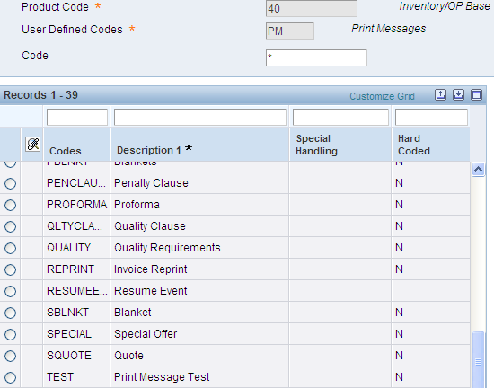
Go to menu G4241 to Work with Print Message (P40162). Setup the Print Message code with Text Attachment; this is the message to print.

Message ID
For more details see Print Messages Preference (P40305/P40162)>).
The Inventory Commitment preference enables a single Sales Order line to be automatically committed from a different branch than the header branch, or be committed across several branches. This will increase the chances that an order will be completely filled, and gives users greater flexibility to commit from locations that make sense in their business.
Businesses using the Inter-branch process usually enter Sales Orders in a Branch/Plant that is a sales office and may not carry any inventory. They use Inventory Commitment Preferences during the Sales Order Entry process to resolve the sourcing Branch/Plant. The intention is to ship the order from the sourced Branch/Plant. This is a common business model where many sales Branch/Plants source their orders from one or more distribution centers. The sourcing may take place from multiple Branch/Plants, based on the preference setup and availability at the sourced Branch/Plants.
Use the Sequence Number field to tell the system which Branch/Plant you want to try to pull inventory from first, second, and so on. When the Route Code, Mode of Transportation, and Carrier Number fields are populated, these values will be used to populate the Sales Order Detail (F4211) records. If using a Carrier (15) or Mode of Transport (16) Transportation preference for these values, the information populated in the Inventory Commitment preference will be ignored.
The Branch Plant, Percent To Fill and Preference Status options are required, along with the Sequence Number if multiple branches are set up. Optional fields are Mode of Transport, Route Code and Carrier. If these are set up, they will populate the Sales Order Detail File (F4211) for an order created with this preference applied.
Add Item, Customer, From Level, UOM and effective dates.

Add detail by taking Row Exit to Pref Details

Carrier
Detail Business Unit (MCU)
Mode of Transport
Percent to Fill
Route
For more details see Inventory Commitment Preference Basic Profiles (P40306).
Delivery documents are specific documents or sets of documents associated with an EnterpriseOne shipment or load created through the Transportation Management system. These documents can be printed interactively by taking a row exit from within Work With Shipments (P4915) or Work With Loads (P4960), or these documents can be printed in batch mode using either Batch Delivery Documents for Loads (R49548) or Batch Delivery Documents for Shipments (R49549). All delivery documents consist of a Build UBE and a Print UBE, with the exception of Invoice Print (R42565).

Document Set
For more details see Advanced Transportation Preferences.
Accessorial rates are special charges in addition to regular line haul rates. They are often assessed whenever additional equipment is needed, or an item requires special handling, or a fee is levied. Examples of these accessorial charges would be lift gate service, a hose adapter for delivery of bulk liquids, or fees for detention or weekend delivery. In EnterpriseOne, these accessorial rates are referred to as Options and Equipment. Option/equipment rates are set up similar to other types of rates in that they can be flat rates or per unit rates. When the system evaluates an option/equipment rate, it calculates a charge only if the corresponding option/equipment applies to the shipment or load. Option/equipment rates are identified by specifying the option/equipment code in the rate definition.
Option/equipment codes can also be used to control route selection, and do not have to have charges associated with them. Option/equipment rules can be used to automatically include or exclude certain routes from being eligible for a particular origin or destination. For example, if a shipment’s destination requires a vehicle to cross a bridge with a 15,000 pound weight limit, an option/equipment rule can be set up to exclude all truckload carriers from routing options.

Delivery Line Level
Options/Equipment
For more details see Advanced Transportation Preferences.
The Customer Freight preference is used to add billable charges to an order, select a routing entry and specify the freight terms for a shipment.
For example, if multiple freight charges exist on an order, this preference can be used to determine if all freight charges should be added together on one summarized line or if the individual charges should be appear on separate lines.
The Customer Freight preference also determines the factors that influence automatic route selection. The system evaluates cost, performance, and delivery time, based on the customer freight preference.
In the form Customer Freight Revisions P40332 enter the Customer Number (required due to the hierarchy selection from the previous step), the additional driver fields (if any) and the return fields such as Freight Handling code, Route Selection type, Billable Freight, Distance, Distance UOM.

Freight Rate Schedule
Freight Handling Code
Route Selection Type
Billable Freight Summary/Detail flag
Include/Exclude flag
Distance
Distance UOM
For more details see Advanced Transportation Preferences.
The Carrier preference is used to select or exclude a specific carrier.
The Carrier Preference is NOT designed to work with Regular Sales Orders, only Transportation Sales Orders. For more information on this please see Carrier Not Defaulting During Sales Order Entry Using Advanced Preferences ( 2447980.1).
It can also be used to select a carrier from a list of preferred carriers. The system uses the Carrier preference to evaluate routes. A route with an excluded carrier is not selected during automatic route selection. The system displays a warning message in routing options if an excluded route is selected for a shipment.
In the form Carrier Revisions P40333 enter the Customer Number (required due to the hierarchy setup), the additional driver fields (such as mode of transport, origin, FH) and the return fields. For Carrier preference, the return fields are: Include/Exclude flag and Preferred Carrier 1, 2 and 3.

Include/Exclude flag
Preferred Carrier 1
Preferred Carrier 2
Preferred Carrier 3
For more details see Advanced Transportation Preferences.
The Mode of Transport preference is used to select a specific transportation method based on destination, in addition to preferences at the customer or item level. For example, if a customer prefers that a parcel carrier using second day air always ship all shipments to a specific destination, that would be set up as a Mode of Transport preference.
In the form Mode of Transport Revisions P40334 enter the Customer Number (required due to the hierarchy selection), the additional driver fields (such as Branch Plant, Origin, destination) and the return field which is the Mode of Transport.
Mode of Transport
For more details see Advanced Transportation Preferences.
Advanced Payment Terms was created to offer customers a more favorable payment term based on the amount of an item that is ordered. For example, if items in basket A exceed $10,000, all order lines in the basket will receive payment terms of net 60 days, rather than net 30 days.

Payment Terms Code
For more details see Extended Payment Terms Advanced Preference Profile.
The Sales Price Based on Date is new functionality that allows the system to calculate a price based on a new Price Effective Date field populated in the sales order detail. This date is used to retrieve a Base Price (F4106). In addition, when Advanced Pricing discounts are applied, this date is used to apply the applicable discounts. The user can manually populate the Price Effective Date or the date can be populated by using a new Advanced Preference. The Advanced Preference can be setup by item, item group, customer, or customer group and can also utilize complex groups similar to the functionality used in advanced pricing. Otherwise, the date will default from the Order Date in the sales order header.
The Sales Price Based on Date can be used in the following scenarios:

Price Based on Date
Effective Date
For more details see Sale Price Based on Date Advanced Preference.
The Gross Profit Margin functionality allows users to define minimum and maximum gross profit margin targets using Advanced Preferences. The preference provides flexibility when defining gross profit margin targets since they can be defined at different levels like the Item or Item Group level, Customer or Customer Group level, etc. This Advanced Preference works with the Gross Profit (Basis Code 9) Advanced Price Adjustments and allows users additional flexibility in setting gross profit margins on the fly when entering sales orders via Sales Order Entry. If the profit margin percentage entered on a sales detail line falls outside of the defined lower and upper limits, a warning will be issued in Sales Order Entry P4210.
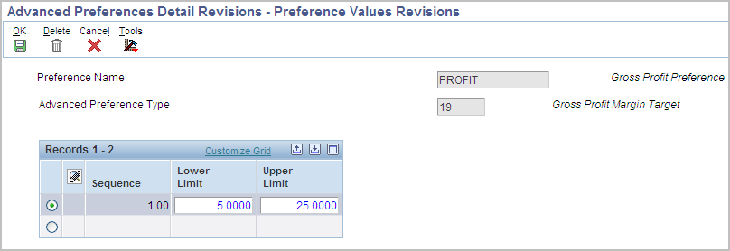
Lower Limit
Upper Limit
For more details see Gross Profit Margin Advanced Preference functionality with Advanced Pricing.
The Sales Commission preference is used to bring in sales personnel and commission rate information to a sales order detail line. Commissions can be setup for the Ship-To or Sold-To, and based on individual customers, customer groups, and items or item groups. The preference overrides the header information at the line level. The system will search through the preference hierarchy until it finds a match. The Line of Business and Branch/Plant fields are additional search fields that can be used by the preference. Normally, commission information is defaulted in from the Customer Billing Instructions, but the Sales Commission preference overrides the header information at the line level.
Commissions will only be applied at the header or detail. If header commissions are added or changed after accepting the order and commissions are set to default to the detail, the header commission information will override any detail commission information that was previously applied. Different commission preferences can be set up for various customer and item combinations based on the line of business and branch/plant values.
As of 8.9, when using the standard Commission Preferences, this preference allows any number of commissions to be added to an order. In that sense it is an 'Additive' preference.

Salesperson Code
Sales Commission
Flat Commission Amount
Amount Per Unit
Commission Code Type
For more details see Commissions in Sales (P42460).
The Order Preparation Days preference enables the automatic calculation of the days between the Scheduled Pick Date and Promised Ship Date (PPDJ), on the sales order detail line.
This preference is also applied at time of Inventory Commitments (R42997).
The system uses the number of days specified in preference information to determine the time it will take to pick the order line, then get it ready to be shipped. Often times, the Delivery Date Preference (09) is used in conjunction with the Order Preparation Days preference (16) to determine the Promised Ship Date (PPDJ) in order to meet the Promised Delivery Date (RSDT).

Order Preparation Days
For more details see Order Preparation Days Basic Profiles (P40316)).
A product can now be shipped based on Lot Expiration Date, Sell By Date and/or Best Before Date greater than the last shipment. The Ascending Ship Date Rule must be setup for any combination of Customer, Customer Group, Product or Product Group. The ability to view recent shipments to a customer by Last Lot Number, Last Expiration Date, Last Sell By Date and Last Best Before Date shipped makes sure that the customer always gets product that is fresher or newer that what was previously shipped.

Check Best Before Date
Commitment Date Method
Check Expiration Date
Check Sell by Date
For more details see Ship Ascending Dates Advanced Preference (P4239) ( 625705.1.
The Next Order Status preference is used to skip or insert processing steps after Sales, by overriding the next step in the Order Activity Rules. Certain customer/item combinations may require that steps in the sales order process be skipped.
Programs Affected:
This preference, whether basic or advanced, is applied at Sales Order Entry (P4210/P42101), Batch Order Edit/Create (R40211Z) and Batch Preference Update (R40840).
The preference can be activated at Sales Order Entry, Ship Confirmation (P4205), or Invoice Print (R42565).
Additional Information: The system will search through the preference hierarchy until it finds a match. The Next Order Status is applied at Sales Order Entry. The Order Activity Rules must be set up to accommodate the next status value that is brought in via the preference, and the system will not check for or prohibit invalid next status values when creating the preference. Hence it is possible to receive an error in Sales Order Entry that the status is invalid.
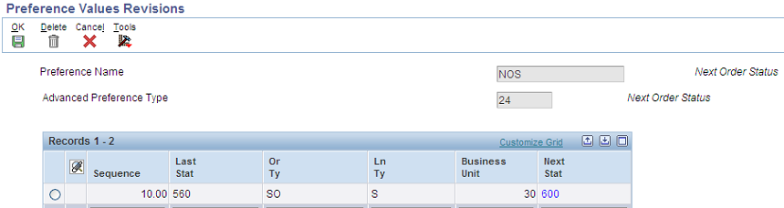
Next Status
For more details see Next Order Status Basic Profiles (P40341).
Grades enables items to be classified (for example, grade A eggs and grade AA eggs). Potency allows a percentage of an active ingredient in a product to be specified (for example, the percentage of alcohol in cough syrup).
When grade or potency control is activated for an item, a standard grade or potency can be entered for the item along with a range of acceptable values. If items are received that are not within the acceptable range, the system displays a warning message. A sales order can not be created for items that are not within the acceptable range.
Acceptable grade or potency ranges for each of customer can be specified using preference profiles. Item grade and potency values are applicable only to items that are produced in lots. Both grade control and potency control cannot be used for the same item. The grade or potency of all items in a lot can be specified on Work With Lot Master (P4108). If a grade or potency is not specified, the system uses the standard grade or potency entered on the Additional System Information form of the Item Master (P4101) or Item Branch (P4102) applications.
Bulk products cannot be selected by grade or potency or load confirmed by lot, hence Grade and Potency should only be setup and used for packaged items.

Grade
Potency
For more details see Grade and Potency.
Many customers require that their suppliers ship their product in a standard pack quantity. The customer may order 75 pieces however the standard pack requirement is 100 pieces in a carton, so when the demand for 75 is received into the system the supplier is required to ship the 100 not the 75. In order to achieve this, the Standard pack flags within the Demand Header record (F40R10) must be activated. These flags are activated by the Round to Standard Pack preference during the EDI inbound Edit/Create (F47171). When these flags are activated and the Create Schedule UBE (R40R010) is run for Firm and Planned it will round to the standard pack within the Sales order or Forecast.

Rnd Std Pck-Firm
Rnd Std Pck-Plan
For more details see Advanced Preference Round to Standard Pack for Demand Scheduling (F40R10, R40R010).
This Generic Match Advance Preference (Preference Type 40) determines what information will be populated to the Sales Order Detail Customer Ledger Generic Key field (F4211.CLGM). The preference is driven by the normal hierarchical fields (customer, customer group, item, item group) and branch/plant. The return field will be a value between 1 and 9 corresponding to the list below.
Based on this value, the generic match field will be built as described in the list.
Below are the 9 supported combination's of data (listed in the glossary for dd item CLGM) listed below:
1= Job Number
2= Job Number + Job Sequence Number
3= Job Number + Customer Item Number
4= Job Sequence Number
5= Job Sequence Number + Job Number
6= Job Sequence Number + Customer Item Number
7= Customer Item Number
8= Customer Item Number + Job Number
9= Customer Item Number + Job Sequence Number
The Job Number and Job Sequence Number are Demand Scheduling Module (DSE)/Transportation Management Module (TMS) Sequencing specific. The generic match preference was designed in this manner to allow additional data combination's to be added to the preference as return values and into the B4280030 as a custom coded solution to return the data combination related to the new Advanced Preference value.
The Generic Match Preference will work without DSE, but only when the Customer Item number (7) is being used as the generic match. The Generic Match preference will get resolved only when the Level Break is set to 'None' in the Advanced Preference Definition and only two different hierarchies can be used: Customer only and all items/all customers is used. Any other combination (Customer group/item group, item/customer etc) will not work. Although Advanced Preference 40 is a DSE preference, it will work for regular sales orders and only the customer item number will get updated to the Customer Ledger Receipt Matching Reference 1 (F03B11.RMR1) field.
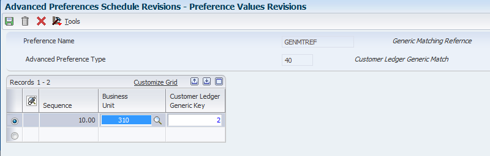
Customer Ledger Generic Key
For more details see How does Advance Preference #40 (Generic Match) work?.